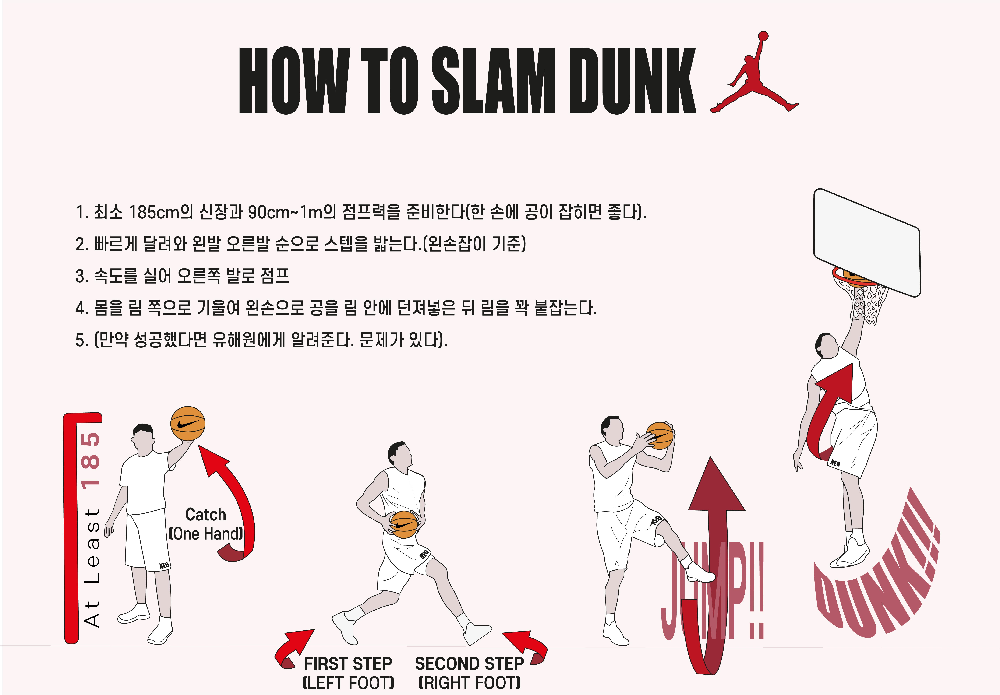

<!DOCTYPE html>
<html lang="en">

<head>
    <meta charset="UTF-8">
    <meta name="viewport" content="width=device-width, initial-scale=1.0">
    <title>About NEO</title>
    <link rel="stylesheet" href="style.css">
    <link rel="stylesheet " href="color.css">
    <link rel="stylesheet " href="s.css">
    <link rel="shortcut icon " type="image/x-icon " href="./LOGO.png">
    <link rel="stylesheet" href="https://cdnjs.cloudflare.com/ajax/libs/font-awesome/5.13.0/css/all.min.css">
</head>

<body>
    <section class="sec" id="home">
        <header>
            <div class="toggle"></div>
            <a href="#" class="btn">TO FIND U</a>
        </header>
        <div class="imgBx_">
            
        </div>
        <div class="content_">
            <h2> WELCOME I'm<br><span>YOO HAE WON</span></h2>
            <p>유해원의 웹페이지에 오신 걸 환영합니다. 이 곳은 유해원이 누구인지, 무엇을 했는지, 무엇을 하고있는지를 알 수 있는 곳입니다. 인스타그램과 유튜브 채널, 사운드클라우드 아이콘을 클릭하시면 제 채널로 이동하니 궁금하신 분들은 구경해주세요. </p>
            <a href="#" class="btn">Watch My Portfolio</a>
        </div>
        <footer>
            <ul class="sci ">
                <li>
                    <a href="https://www.youtube.com/channel/UCB0CIN9B2LdR_kAH5vU1d2Q "></a>
                </li>
                <li>
                    <a href="https://www.instagram.com/neneoo04/ "></a>
                </li>
                <li>
                    <a href="https://soundcloud.com/user-39174974 "></a>
                </li>
            </ul>
            <p class="copyrightText ">2021 2M NEOPORTFOLIO</p>
        </footer>
    </section>

    <div class="sidebar">
        <ul class="menu">
            <li><a href="#home">Home</a></li>
            <li><a href="#About">About</a></li>
            <li><a href="#services">Work</a></li>
            <li><a href="#work">Project</a></li>
            <li><a href="#slider">Photo</a></li>
        </ul>
    </div>

    <section class="about" id="About">
        <div class="title white">
            <h2>About Me</h2>
            <p>유해원에 대하여 알아봅시다</p>
        </div>
        <div class="content">
            <div class="textBx">
                <p>
                    저는 중학교 2학년 때 학교를 나왔습니다. <br><br> 아 막 불미스러운 일이 있어서 강제로 쫓겨났다거나 그런 건 아니니 떠나지는 말아주세요!! 부모님의 권유로 공교육을 떠나 대안교육을 선택했는데요, 거꾸로캠퍼스에 오기 이전에도 다른 한 곳의 대안학교를 다녔습니다.<br><br> 그럼 이 선택을 통해 앞으로 제가 하고싶은 것이 무엇인지 궁금하실 수도 있을 것 같습니다. 근데 그건 비밀이에요. 음 그 꿈을 이루든
                    이루지 못하든 후회없는 노력을 하고난 뒤에 알려드리겠습니다. 이해해주세요.<br><br> 저는 운동과 음악을 좋아합니다. 좀 뜬금없었나요. 그래도 저에 대한 소개에서 좋아하는게 빠질 수는 없잖아요? 다시 돌아와서, 운동은 농구를 가장 좋아해요! 경기를 보는 것도 굉장히 좋아하고 직접 하는 것도 아주아주 좋아합니다. 꽤 잘해요. ㅋ. 음악은..정말 편식을 안 하는 편이에요. 팝송에 힙합에 EDM에 R&B에 락에
                    진짜 다 듣습니다(아..아이돌 노래는..안듣네요). 그나마 안 좋아하는 노래는..동요?<br><br> 아 신체 프로필도 궁금하시려나요. 안 궁금하셔도 어쩔 수 없습니다. 저는 남은 공간을 채워야겠거든요. 제가 아직 성장 중이라서 희망을 놓지는 않고 있는데 일단 신장은 174cm입니다. (음! 포기하지 않아) 그리고 체중은 비공개할게요. 마지막으로 모두가 보셨으면 하는 미드 "GLEE"를 추천하며 소개를 끝마치도록
                    하겠습니다(처음부터 끝까지 참 맥락 없는 글이네요)
                </p>
            </div>
            <div class="imgBx">
                
            </div>
    </section>

    <section class="services" id="services">
        <div class="title ">
            <h2>Recent Work</h2>
            <p>현재 유해원이 하고있는 것들, 할 수 있는 것들</p>
        </div>
        <div class="content">
            <div class="servicesBx">
                
                <h2>웹 디자인</h2>
                <p>아주 아름답지는 못하더라도 눈 감고는 그나마 봐줄 만한 웹의 디자인은 가능합니다. XD, Illustrator, Photoshop 등 사용 가능하고 물론 코딩으로도 디자인 할 수 있습니다. 당연히 앞으로도 웹의 기획과 디자인에 대해 많은 공부를 해야합니다. 그래도 지금 보고 계시는 웹페이지는 제가 만들었어요! 보기에 더 예쁘고 사용하기에 더 편한 디자인을 하도록 노력하겠습니다. </p>
            </div>
            <div class="servicesBx">
                
                <h2>웹 개발</h2>
                <p>사실..저는 웹 페이지를 만드는 것을 잘하지 못합니다. 이번 3달 동안 배운 코딩이 제 인생의 첫 코딩 수업이었습니다. 재밌기도 했고 어렵기도 하면서 처음보다는 많이 발전해나갔지만 아직 부족한 점이 많습니다. 코딩 연습을 더 많이 해서 더 멋있는 웹피이지를 개발하도록 해보겠습니다. 웹 디자인과 함께 개발까지 한다면 좋겠네요!!</p>
            </div>
            <div class="servicesBx">
                
                <h2>로고 디자인</h2>
                <p>조금은 자신있게 말할 수 있는게 나왔군요! 로고 디자인도 코딩과 비슷하게 저번 1모듈에 V랩 수업을 통해 시작하게 되었습니다. 브랜딩이라는 것을 배우고 그에 따른 로고의 상징성을 배웠는데요 저희 팀의 프로젝트 브랜딩을 진행하는 과정에서 제가 로고를 만들게 되었습니다. 현재 그 로고는 저희 팀의 리워드와 영상, SNS 프로필 등에 널리 사용되고 있습니다. 제작자로서 굉장히 뿌듯하네요!
                </p>
            </div>
            <div class="servicesBx">
                
                <h2>사진</h2>
                <p>'사진을 찍는다'라는 것은 아마 대부분의 사람들이 좋아하는 활동일 겁니다. 저도 원래 사진 찍는 것을 좋아하기는 했지만 제대로 사진을 찍고 편집하는 것은 V랩에서 배웠습니다. 매일 지나는 거리와 매일 보는 풍경도 카메라 렌즈를 들이대며 자세히 보다보니 평소와는 다르게 느껴지더라고요. 사진 하나하나가 내 인생의 장면 하나하나라는 생각을 하며 살게되었습니다. 여러분도 사진 많이 찍으셔요!!
                </p>
            </div>
            <div class="servicesBx">
                
                <h2>내용 작성</h2>
                <p>말 그대로 글을 작성하는 것입니다. 별 거 아니라고 생각하실지도 모르지만 제가 하고있는 일 중 하나니까 일단 소개를 해보도록 하겠습니다. 팀의 회의 내용이나 외부에 내보낼 글, 팀의 프로젝트 소식 등 웬만한 글은 모두 작성합니다. 단순히 전해야 될 내용을 잘 담는 것보다는 글을 재밌게 쓰는 걸 좋아합니다. 예전에는 나만의 소설이나 시를 쓰는 것도 즐겨했는데요 지금은 안하고 있네요(긁적). 글을 잘 쓰기 위해서는 많이
                    써봐야 하는 수밖에 없는 것 같아요!!
                </p>
            </div>
            <div class="servicesBx">
                
                <h2>영상 제작</h2>
                <p>영상은 우리가 살아가면서 가장 많이 접하는 매체 중 하나인데요, 저도 만들 줄 압니다. 다시 말할게요. 만들 줄 안다기보다는 '만들어본 적이 있다'입니다. 이 또한 V랩 시간에 간단한 컷 편집과 자막 편집, 음향 편집 등을 배워 영상을 만들어봤습니다. 단순히 영상을 편집하는 것 말고 기획부터 시작해서 하나의 흐름을 일관되게 가져갈 수 있는 능력을 가지고 있을 수도 있어서 키우는 중입니다.(찡긋)</p>
            </div>
        </div>
    </section>

    <section class="work" id="work">
        <div class="title ">
            <h2>My Project</h2>
            <p>거꾸로캠퍼스라는 곳에서 유해원이 진행한 프로젝트들</p>

        </div>
        <div class="content">
            <div class="workBx">
                <div class="wolk">
                    <input class="modal-btn" type="checkbox" id="modal-btn" name="modal-btn" />
                    <label for="modal-btn">
                        <div class="textBx">
                            <h3>2020 3M<br/>
                                <div class="ju">개인주제프로젝트</div>
                            </h3>
                        </div>
                    </label>
                    <div class="modal">
                        <div class="modal-wrap">
                            
                            <p>먼저, 코딩을 할 줄 아는 사람에게 부탁하면 안되냐는 생각을 하시는 분들도 계실텐데, 만약 내가 코딩을 할 줄 안다면 나의 아이디어를 언제든지 가감없이 앱으로 만들 수 있어 내가 코딩을 하는 것이 내 아이디어를 시각화하는 유일한 진짜 방법이라고 생각했습니다.<br><br>그 이후에는 코딩과 프로그래밍 언어가 무엇인지에 대해 용어를 정리하고 스위프트 플레이그라운드라는 앱을 통해 코딩의 기초를 익혔습니다.
                                다양한 명령어에 대해 알아보고 직접 연습하며 코딩의 기본에 대해 알아갔습니다.<br><br> For 루프, if 코드, while 루프, 변수, 연산자 코드, 함수, 알고리즘 등 다양한 명령어와 코딩에 필요한 용어들을 학습했습니다. 그리고 코딩에 대해 잘 모르는 사람도 이해할 수 있도록 이 명령어를 이용해 작성한 코드가 작동되는 것을 보여주며 용어에 대해 소개해보았습니다.<br><br> 첫
                                개주프를 진행하며 처음에는 아예 모르는 분야에 혼자 도전한다는 것을 걱정도 했지만 다행히 플레이그라운드가 정말 친절히 알려줘 쉽다는 생각을 했습니다. 그러나 그것도 잠시, 띄어쓰기 하나, 소문자인지 대문자인지 이런 사소한 것들 하나 때문에 명령어가 실행되지 않는 것을 보며 섣부른 판단이었다고 느꼈습니다. 그래도 앞으로 연습해서 빨리 기량을 발전시켜야겠다는 꿈도 생겼습니다. 이제 반걸음을 내딛었을
                                뿐인데 벌써부터 앱을 만들고 싶어서 안달이 난 것 같습니다. 그리고 미약하지만 제 배움장터 발표를 보고 코딩을 배우고 싶다고 생각을 한 사람들이 있으면 좋겠습니다.</p>
                        </div>
                    </div>
                </div>
            </div>
            <!-- <div class="workBx">
                <div class="imgBx">
                    
                </div>
                <div class="textBx ">
                    <h3>2020 3M<br/>
                        <div class="ju">개인주제프로젝트</div>
                    </h3>
                </div>
            </div> -->
            <div class="workBx">
                <div class="wolk">
                    <input class="modal-btn2" type="checkbox" id="modal-btn2" name="modal-btn2" />
                    <label for="modal-btn2">
                        <div class="textBx">
                            <h3>2020 4M<br/>
                                <div class="ju">개인주제프로젝트</div>
                            </h3>
                        </div>
                    </label>
                    <div class="modal2">
                        <div class="modal-wrap2">
                            
                            <p>코딩은 내 아이디어를 시각화하고 남에게 보여주기 위해서는 꼭 알아야 한다고 생각했으며 저번 모듈에도 코딩을 주제로 개인주제프로젝트를 진행했기 때문에 코딩의 개념, 아주 간단한 명령어만 알고 있었던 상황이었습니다. 매우 조금의 학습이긴 하지만 그 기억들마저도 사라지게 내버려둔다면 저번 모듈에는 그저 시간을 낭비하고 허비한 것이라고 느껴질 것 같아 이번 모듈에는 저번에 학습한 것을 활용해보자고 판단하였습니다.
                                나만의 앱을 만들고 싶다는 생각은 아직도 유효했고 전문적인 학습은 아니지만 조금이라도 미리 알고있다면 나중에 배울 때 편할 수 있다고 생각했습니다.<br><br> 코딩을 하는데 사용한 프로그램을 소개하고 코딩의 기초가 되는 동작을 직접 실행해보았습니다. 시뮬레이터를 사용해 내가 작성한 코드가 작동되는 것을 확인해볼 수 있었고 마지막으로는 네비게이션 컨트롤러를 사용해 화면 전환까지 해보았습니다.
                                <br><br> 텍스트의 글꼴, 크기, 굵기 등 완전 기초가 되는 것부터 시작하여 앱 실행을 위한 동작인 클릭과 화면 전환까지 직접 코드를 작성해 실행해보았습니다. 모든 동작의 코드를 스크린 캡쳐해 직접 보여주며 중요 명령어를 설명하였고 이해를 위해 영상 녹화까지 하였습니다.<br><br> 이번 모듈은 벌려놓은 일이 너무 많아서 시간분배를 잘하고 계획을 꾸준히 지켰어야 하는데 모든게 흐지부지되버려서
                                굉장히 아쉬웠습니다. 개인주제 프로젝트는 매일매일 해야한다는 것을 알면서도 여러가지 이유로 많이 하지 못한 것이 사실이어서 실망스럽기도 합니다. 매우 적은 시간을 투자했기 때문에 학습한 내용이 빈약한 것도 사실이고 그 적은 사실마저 E-Book과 발표자료를 만드는데에도 썼기 때문에 정말 학습한 내용이 없는 것 같습니다. 다음에 똑같은 기회가 주어진다면 하루만에도 끝낼 수 있는 것을 한 모듈
                                동안 했다는 것이 놀라울 정도기 때문에 앞으로는 계획을 잘 지켜야겠다는 큰 깨달음을 얻게되었습니다.</p>
                        </div>
                    </div>
                </div>
            </div>
            <div class="workBx">
                <div class="wolk">
                    <input class="modal-btn3" type="checkbox" id="modal-btn3" name="modal-btn3" />
                    <label for="modal-btn3">
                        <div class="textBx">
                            <h3>2020 3M<br/>
                                <div class="ju">주제중심프로젝트</div>
                            </h3>
                        </div>
                    </label>
                    <div class="modal3">
                        <div class="modal-wrap3">
                            
                            <p>팀원들끼리 3모듈의 공통주제인 ‘기후변화에 관한 심각한 문제가 무엇이 있을까?’를 공유하던 중 모두가 전 세계적으로 큰 이슈가 되고 있는 해수면 상승이 가장 큰 문제라는 것에 공감했고, 그 후 ‘많은 사람이 공감할 수 있는 해수면 상승의 피해가 무엇이 있을지 고민하던 중 우리의 삶에 적지않은 영향을 끼치고 있는 갯벌에 대해 다루면 좋겠다는 의견이 나와 주제를 선정하였습니다.<br><br> 해수면
                                상승의 원인을 조사하여 기후변화의 역사와 연관지었고 해수면 상승이 갯벌에 끼치는 영향을 경제적 가치와 생태계적 가치로 나누어 정리하였습니다. 설명을 뒷받침할 가시적 자료들도 조사하였고 이 문제를 해결하기 위한 방안에 대해서도 고민해보았습니다.<br><br> 해수면 상승의 주된 원인으로는 흔히 알고있는 지구온난화말고도 높아진 해수가 팽창하기 때문이라는 것을 배웠습니다. 갯벌의 사전적 정의도
                                정확하게 알게되었고 우리나라의 해수면 상승 추이와 갯벌 면적 감소의 추이도 그래프를 통해 현 상황을 이해할 수 있었습니다.<br><br> 첫 팀프로젝트였기 때문에 걱정도 많았지만 다행히 팀원 다같이 역할을 잘 분배하여 열심히 노력한 덕분에 수월하게 끝났습니다. 감소하는 갯벌이라는 우리의 삶에 밀접한 관계가 있는 주제로 프로젝트를 진행했기 때문에 수업이 굉장히 흥미로웠습니다.</p>
                        </div>
                    </div>
                </div>
            </div>
            <div class="workBx">
                <div class="wolk">
                    <input class="modal-btn4" type="checkbox" id="modal-btn4" name="modal-btn4" />
                    <label for="modal-btn4">
                        <div class="textBx">
                            <h3>2020 4M<br/>
                                <div class="ju">주제중심프로젝트</div>
                            </h3>
                        </div>
                    </label>
                    <div class="modal4">
                        <div class="modal-wrap4">
                            
                            <p>모든 사람은 노인이 되기 때문에 지속가능한 공동체와 사회를 위해서는 노인이 존중받아야 한다고 생각했습니다. 그리고 노인 문제 중 가장 심각하다고 판단한 노인빈곤 문제에 대해 프로젝트를 진행하였습니다. 노인빈곤은 지금 노년층뿐만 아니라 미래의 노년층, 즉 현재의 젊은 사람들도 겪게 될 위험한 사회문제라고 생각합니다.<br><br> 노인 빈곤 문제의 현주소를 알아보기 위해 소득수준과 복지제도를 조사해보았고
                                이 문제를 해결하기 위해 현재 진행되고 있는 노력을 찾아보았습니다. 노인 빈곤이라는 사회문제에 대해 더 자세히 알고 프로젝트를 진행하기 위해 노인 빈곤을 주제로 한 다큐멘터리와 논문, 기사 등을 읽고 서로 공유하기도 하였습니다.<br><br> 우리나라의 노인 빈곤율은 OECD 가입국가 중 압도적인 부동의 1위를 유지 중이며 이는 노인 우울증, 노인 고독사 등 다른 노인문제와도 연결됩니다.
                                현재 노인 빈곤 문제를 해결하기 위한 복지정책으로는 연금제도가 대표적이지만 이마저도 허점이 많기에 노인이 기댈 곳이 적습니다. 따라서 연금으로만 문제를 해결하려하면 안되고 노인 일자리 사업 등 다양한 방식으로 문제 해결을 위해 접근해야합니다.<br><br> 두 번째 주제중심 프로젝트인만큼 저번보다 쉬울 줄 알았으나 주제를 정하는 것부터 난항을 겪으며 고생했습니다. 특히 이번 모듈은 문제정의
                                프로젝트와 개인주제프로젝트에 집중하여 주제중심 프로젝트를 진행할 수 있는 시간이 줄어들어 더 힘들었던 것 같습니다. 그래도 팀원들이 기사와 논문을 열심히 읽고 정리해주었으며 질 높은 결과물을 위해 진짜 영혼을 갈아넣어서 결과물은 만족하게 나왔습니다. 다음에 주제중심을 또 언제할지 모르겠지만 다음에 또 하게된다면 좀 더 시간 분배를 잘해야겠습니다.</p>
                        </div>
                    </div>
                </div>
            </div>
            <div class="workBx">
                <div class="wolk">
                    <input class="modal-btn5" type="checkbox" id="modal-btn5" name="modal-btn5" />
                    <label for="modal-btn5">
                        <div class="textBx">
                            <h3>2020 3M<br/>
                                <div class="ju">문제정의-기초</div>
                            </h3>
                        </div>
                    </label>
                    <div class="modal5">
                        <div class="modal-wrap5">
                            
                            <p>시각장애인이 의약품을 구매하고 복용하는 과정에서 어려움을 겪고 있다는 주제를 한 팀원이 공유했고 모두 흥미롭게 느껴 선정하였습니다. 시각장애인들은 약품의 성분과 복용 방법을 알기 어렵고, 약을 복용해야 하는 시간을 알기도 힘들다고 합니다.<br><br> 먼저 우리가 선정한 주제가 사실인지를 확인하기 위해서 공인화된 논문과 보고서 등을 찾아보았고 직접 인터뷰도 진행해보았습니다. 또, 현재 상황과 이
                                문제를 해결하기 위해 하고있는 노력을 조사해보아 바꿔나가야하거나 개선해야 할 점들을 정하였습니다.<br><br> 시각장애 판별 기준을 알아보고 실제로 시각장애인분들이 이 문제를 겪고있는지 알아보았습니다. 또, 현재 시중에 판매되고 있는 제품 중점자 표시가 되어있는 의약품의 수량과 이름을 조사함으로써 이 문제가 심각하다고 판단하였습니다. 인터뷰는 제약회사와 시각장애인, 약사 등 이해관계자들을
                                대상으로 진행하였습니다.<br><br> 여태까지 장애인의 인권은 당연히 존중받아야 한다고 생각하며 살아왔지만 정작 자세히, 제대로 알고있는 장애인 문제는 없었습니다. 이번 프로젝트를 경험하면서 장애인의 인권은 생각보다 존중받지 못하고 있다고 느꼈고 비록 이 문제를 지금 당장 우리의 힘으로 해결하지는 못하지만 언젠가는 꼭 해결할 수 있으면 좋겠다고 생각했습니다.</p>
                        </div>
                    </div>
                </div>
            </div>
            <div class="workBx">
                <div class="wolk">
                    <input class="modal-btn6" type="checkbox" id="modal-btn6" name="modal-btn6" />
                    <label for="modal-btn6">
                        <div class="textBx">
                            <h3>2020 4M<br/>
                                <div class="ju">문제정의-기초</div>
                            </h3>
                        </div>
                    </label>
                    <div class="modal6">
                        <div class="modal-wrap6">
                            
                            <p>팀원 모두가 지속가능한 공동체와 사회를 위해서는 성평등이 중요하다고 생각하고 있었고, 우연히 신문을 읽던 중 발견한 책의 내용이 이번 모듈의 대주제와 연관이 있다고 생각해 이 주제를 선정하였습니다. 남성에 맞춰져 설계된 도시와 사회가 지금도 이어지고 있으며 이는 우리 눈에 보이지 않는 성차별이기 때문에 심각한 문제라고 판단하였습니다.<br><br> 먼저 우리가 선정한 주제가 사실인지를 확인하기 위해서
                                공인화된 논문과 보고서 등을 찾아보았고 직접 인터뷰도 진행해보았습니다. 아무래도 책의 내용을 토대로 주제를 선정하였기에 책의 내용이 중요하여 책도 파트를 나누어 각자 정리를 한 뒤 공유하였습니다.<br><br> 현재 블루오션인 인공지능과 딥러닝에서 발생하는 성차별 문제에 대해 학습을 진행하려 했으나 이는 우리가 깊게 학습하기 어렵다는데에 의견이 모아져 의학계에서의 여성 데이터 공백에 대해
                                학습하였습니다. 그러나 이마저도 주제가 사실과 다르다는 점을 지적받고 결국 여러 분야에서의 여성 데이터 공백을 정리하였습니다. 성별에 따라 사용시간이 다르지만 동일한 화장실의 면적, GDP에서 무시받는 가사노동력, 산업재해로 인정받지 못하고 있는 성폭력 등 여러 여성 데이터 공백이 있습니다.<br><br> 성차별은 모두가 알고있음에도 쉽게 해결되지 않는 심각한 문제입니다. 그리고 더 위험한
                                것은 우리가 성차별이라고 느끼지 못하고 있음에도 성차별인 행동이나 제도가 있을 수 있다는 것입니다. 사실 이번 프로젝트에서는 우리가 열심히 조사하고 문제라고 정의한 것이 문제가 아니였다는 결론이 나와 많이 당황하고 힘빠지기도 했으나 그래도 우리가 시간을 허비한 것이 아니었으며 노력을 했기에 이런 결론도 도출할 수 있다고 생각하고 보람을 느꼈습니다.</p>
                        </div>
                    </div>
                </div>
            </div>
            <div class="workBx">
                <div class="wolk">
                    <input class="modal-btn7" type="checkbox" id="modal-btn7" name="modal-btn7" />
                    <label for="modal-btn7">
                        <div class="textBx">
                            <h3>2021 1M<br/>
                                <div class="ju">문제정의-심화</div>
                            </h3>
                        </div>
                    </label>
                    <div class="modal7">
                        <div class="modal-wrap7">
                            
                            <p>사실 이건 원래 진행되고 있던 프로젝트에 제가 참여한 것입니다. 그러니까 문제정의 기초를 함께하지 않고 심화부터 함께한거죠. 제가 합류한 이유는 인력 차원에서의 문제도 있지만 주제가 ‘학교 성교육’과 관련된 것이었기 때문입니다. 잘 생각해보면 우리는 초등학생 때부터 학교에서 성교육을 받지만 항상 같은 내용이거나 제대로 가르쳐주지 않습니다. 저희가 알고 싶은 건 다른 것인데도 말이죠. 그래서 저는
                                ‘학교에서의 성교육이 학생들이 필요로 하는 성지식을 제공하지 못하고 있다’를 주제로 프로젝트를 진행하게 되었습니다.<br><br> 중간에 합류를 한 것이기 때문에 그 전 기간동안 무엇을 하였는지 설명을 듣고 앞으로 학습할 내용에 대해 방향성을 정하였습니다. 그 과정에서 학교 성교육의 실태와 관련된 논문과 기사문을 조사하고 지식맵을 그려보았습니다. 또, 전문가에게 성교육을 받는 시간을 가지고
                                유네스코에서 발표한 포괄적 성교육 가이드를 읽어보는 등의 활동을 하였습니다.<br><br> 사실 중간에 들어온 입장이다 보니 무엇을 해야할지 갈피를 못 잡기도 하였는데요 저희는 수월한 문제정의를 위해서 더 많은 기사와 논문을 조사하고 정리하는 학습을 진행하였습니다. 이 과정에서 우리도 잘 몰랐던 내용들을 확실히 알게되기도 하였고 원래 알고있던 것도 남에게 바로 설명할 수 있게 되었습니다.
                                문제를 해결하기 위해서는 무엇이 문제인지도 잘 알아야 하는데 그렇지 못했던 것이 사실이었던 것입니다. 따라서 2021년 1모듈에는 문제를 더 확실히 정의하는데 초점을 맞춰 프로젝트를 진행하였습니다.<br><br> 중간에 들어와 처음에는 무슨 얘기를 하는지, 뭘 해야 하는지 잘 몰랐던게 사실입니다. 하지만 그 상태로 가만히 있을 수는 없었고 친구들에게 먼저 물어봐 다같이 으쌰으쌰 하였습니다.
                                학교 성교육의 문제는 제가 공교육을 받을 때 별로 신경쓰지 않던 것인데 이렇게 찾아보니까 생각보다도 더 심각하더군요. 어쩌면 그 점도 프로젝트에 더 열심히 참여하게 된 이유가 아닐까 싶습니다. 어쨌든 그렇게 우여곡절을 거친 이 프로젝트는 현재 문제해결까지 간 상태입니다. 그 점에 대해서는 우리 팀원들이 모두 자랑스럽고 나 자신도 뿌듯하게 느껴집니다.</p>
                        </div>
                    </div>
                </div>
            </div>
            <div class="workBx">
                <div class="wolk">
                    <input class="modal-btn8" type="checkbox" id="modal-btn8" name="modal-btn8" />
                    <label for="modal-btn8">
                        <div class="textBx">
                            <h3>2021 1M<br/>
                                <div class="ju">알파랩-V랩</div>
                            </h3>
                        </div>
                    </label>
                    <div class="modal8">
                        <div class="modal-wrap8">
                            
                            <p>제 인생 첫 알파랩인만큼 기대감도 컸고 새로웠던 수업이었습니다. 팀원들끼리 V랩을 갈 것인가 M랩을 갈 것인가를 애기해보았는데 당시 저희 팀의 결과물이 책으로 정해지고 있었기 때문에 V랩을 선택하였습니다. 책을 만드는 기술뿐만 아니라 여러 가지 과정에서 필요한 디자인에 대해 배울 수 있다고 생각하였습니다. 일러스트레이터와 라이트룸, 프리미어 프로 등 다양한 매체를 사용하는 법도 배울 수 있어 기능적인
                                발달을 위한 결정이기도 하였습니다.<br><br> 좋은 디자인이 무엇인지에 대해 에세이를 써보고 책의 디자인에 대해 기본을 배웠습니다. 그 과정에서 독립서점도 방문해보는 등 재밌는 경험을 해보았습니다. 또, 디자인이 무엇인지 근본적인 질문에 대해 답하는 시간을 가지며 자신만의 책을 만들었습니다. 이 말고도 일러스트레이터를 사용하여 그림 그리는 법, 프리미어 프로를 사용해 영상 편집하는 법,
                                라이트룸을 사용해 사진을 편집하는 법 등을 배웠습니다.<br><br> 단순히 기술적인 배움만 있었던 것은 당연히 아닙니다. 항상 좋은 디자인이란 무엇인지를 고민하며 여러 가지 영상들을 보고 자신의 생각을 정리해보았습니다. 그리고 브랜딩 수업 같은 경우에는 직접적으로 팀의 마케팅, 브랜딩과 연관되어 실질적인 도움이 되었습니다. 저희 팀이 현재 진행하고 있는 ‘프로젝트 공백’ 또한 이 기간에
                                탄생한 것입니다. 이 말고도 직접 좋은 학교를 디자인해보는 등 우리가 진짜 고민해볼 수 있는 주제를 가지고 수업이 진행되었습니다.<br><br> 첫 알파랩이었음에도 별 다른 점은 없었던 것 같습니다. 물론 태어나서 처음 보는 툴을 사용했던 것과 숙제의 양이 조금 많았던 등 힘들었던 점도 있습니다. 그러나 이 생소한 배움도 팀의 프로젝트와 연관지을 수 있다는 사실이 즐거웠고 실질적인 고민들을
                                하며 점점 성장해나가는 것이 느껴졌습니다. 제 인생에서 디자인은 중요할 일이 없다고 생각을 했었는데 가장 중요해지면서 새로운 경험들을 해본 것 같습니다. 지금 제가 팀의 디자인을 맡고 있는 것도 V랩에서의 경험이 큰 영향을 끼쳤습니다. 앞으로도 수많은 디자인을 접하면서 살아갈텐데 그 때마다 V랩에서의 배움이 떠오를 것 같네요.</p>
                        </div>
                    </div>
                </div>
            </div>
        </div>

        <section class="slider" id="slider">
            <div class="title">
                <h2>PHOTO TIME</h2>
                <p>직접 찍은 사진들이랄까</p>
            </div>
            <!-- swiper슬라이더 메인컨테이너 -->
            <div class="swiper-container">
                <!-- 보여지는 영역 -->
                <div class="swiper-wrapper">
                    <!-- div class="swiper-slide " 를 추가하면된다 -->
                    <div class="swiper-slide img1"></div>
                    <div class="swiper-slide img2"></div>
                    <div class="swiper-slide img3"></div>
                    <div class="swiper-slide img4"></div>
                    <div class="swiper-slide img5"></div>
                    <div class="swiper-slide img6"></div>
                </div>
                <!-- 페이징 버튼 처리 -->
                <div class="swiper-pagination"></div>

                <!-- 방향 버튼 상황에 따라 추가 삭제가능 -->
                <div class="swiper-button-prev"></div>
                <div class="swiper-button-next"></div>
            </div>
        </section>


        <meta name="viewport " content="width=device-width, initial-scale=1, minimum-scale=1, maximum-scale=1">
        <script src="https://unpkg.com/swiper/swiper-bundle.min.js"></script>
    </section>

    <script>
        let menuToggle = document.querySelector('.toggle');
        let sidebar = document.querySelector('.sidebar');
        menuToggle.onclick = function() {
            menuToggle.classList.toggle('active')
            sidebar.classList.toggle('active')
        }
    </script>
    <script type="text/javascript " src="script.js"></script>
</body>

</html>